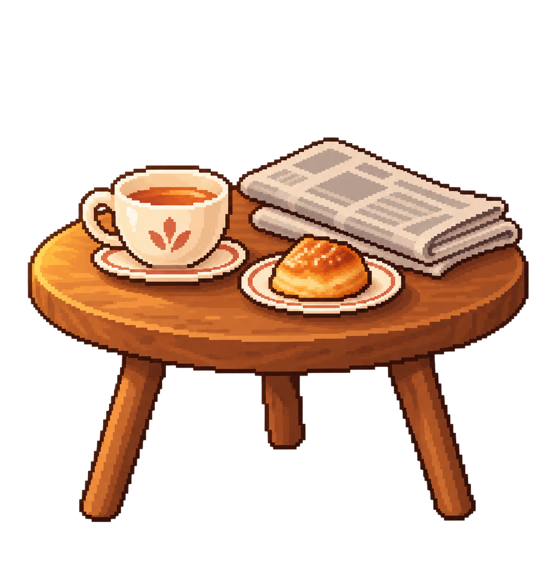
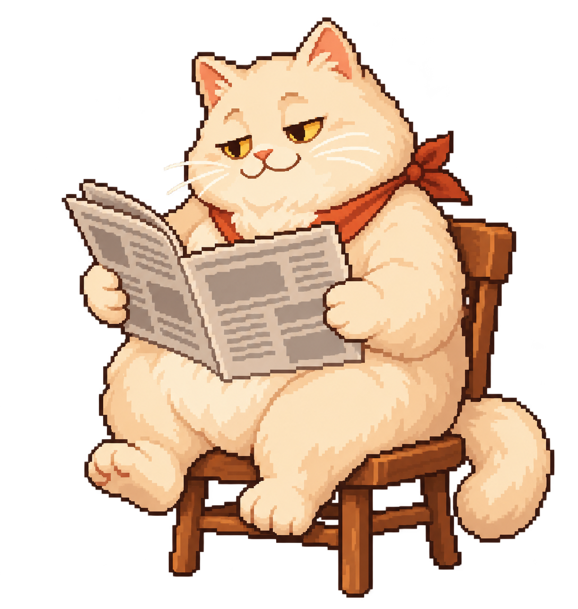

La ballena de Quinta Normal
Algunas criaturas recorren océanos enteros.
P. D. Quizás un viaje muy grande también puede comenzar cerquita de casa.


Todavía quedan muchos lugares por conocer.
Algunas criaturas recorren océanos enteros.
P. D. Quizás un viaje muy grande también puede comenzar cerquita de casa.
La primera foto que Kuro tomó durante su viaje.
P. D. No hace falta ir muy lejos para empezar a mirar el mundo con otros ojos.
Al entrar parecían monstruos. Al volver, Kuro pensó que quizás ellas también tenían miedo.
Kuro movió el tronco y encontró una pequeña huella entre los juncos.
Dato del humedal: aunque a veces les dicen nutrias, los coipos son roedores nativos de Chile.
Kuro y Copo siguieron las huellas hasta encontrar a una familia de coipos en Isla Teja.
P. D. A veces un misterio solo necesita un lugar seco y un poco de ayuda.
¡Nuevo recuerdo para el Álbum de Viaje!